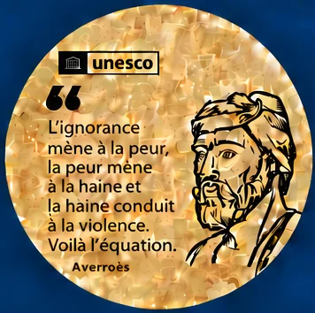

À proposPromouvoir
le dialogue géopolitique.
I-Dialogos entend contribuer à un vrai dialogue transnational, ouvert et pluraliste sur les grands enjeux géopolitiques contemporains, en croisant les regards, les expériences et les expertises issus de différents pays et cultures.
L’exigence de dialogue fait la force de la diplomatie, quand elle est subtile et à l’écoute, à la différence des approches strictement militaires, généralement limitées dans le temps et dont l’actualité souligne quotidiennement les limites…
Voir plus

Les Notes d’I-Dialogos
Les Notes d’I-Dialogos rassemblent des travaux, analyses et propositions consacrés à nos thématiques prioritaires : démocraties, médias, francophonie, santé, eau et environnement, relations internationales…
Voir plus